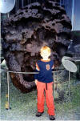
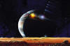
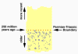
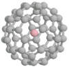
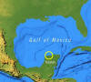
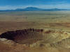
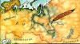
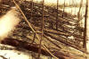

Some facts about meteorites
- Meteoric debris occurs in three flavors:
- Meteoroid--a small particle from a comet or asteroid orbiting the Sun.
- Meteor--the light streak which results when a meteoroid enters the
Earth's atmosphere and vaporizes; also called a shooting star and, when
really bright, a fireball.
- Meteorite--a meteoroid that survives its passage through the Earth's
atmosphere and impact with the Earth's surface.
- Although most meteorites fall into the oceans, the meteorites found in museums are
usually
discovered in Antarctica.
- Antarctica is considered the best place to look for meteorites because
meteorites are relatively easy to spot on an ice sheet and are usually well
preserved there. In addition, the motion of the ice sheet tends to
concentrate the meteorites at blocking locations such as mountain ranges,
with wind erosion bringing them to the surface after centuries beneath
accumulated snowfall.
- Many meteorites have also been discovered in the deserts (e.g., Sahara
Desert), in flat, featureless areas covered only by small pebbles and minor
amounts of sand. Dark-colored meteorites can be easily spotted in these
places, where they have been well-preserved due to the arid climate.
- Most meteorites are pieces of asteroids or comets. Some discovered
meteorites originate from the Moon and Mars.
- Mostly made of stony material. In rare cases, they contain nickel and iron.
- Meteorites weighing a quarter of a pound or more hit the Earth thousands
of times a year.
- Famous meteorites include:
- The Willamette meteorite weighs about
15
tons and is the largest meteorite ever found in the U.S.
- The Hoba meteorite
weighs about 60 tons and is the largest meteorite in the world. It fell to
Earth about 80,000 years ago and was discovered in Namibia by a farmer.
- ALH 84001 (Allan Hills 84001) was discovered in Antarctica in December
1984. It made its way into headlines worldwide when scientists announced
that it contained evidence for microscopic fossils of Martian bacteria.
- The
Peekskill meteorite broke up over the United States on October 9, 1992
and landed on a parked car in Peekskill. The meteor was witnessed by
thousands across the East Coast, was captured on
multiple videos, and remains one of the most famous meteor
sightings.
- In February of 2013, a
10-ton meteor exploded in the Russsian sky and produced a shockwave
which shattered windows and injured hundreds of people.
- In 1954, Ann Hodges of Sylacauga, Alabama became the first (and so far
only) person of record to be struck by a meteorite. While she was napping in
her living room, the grapefruit-sized meteoroid (now called Sylacauga
meteorite or, sometimes, the "Hodges meteorite") crashed through the roof of
her house, bounced off her large wooden console radio, and struck her on the
arm and hip. She was badly bruised but able to walk.

Some large impacts
- For reference, the world's nuclear arsenal consists of about 100,000
nuclear devices, each capable, on average, of releasing about 1 megaton of
TNT (an explosive agent). By comparison, the Hiroshima and Nagasaki bombs of
World War II released about 20 kilotons of TNT each.
- In 1994, the Shoemaker-Levy 9 comet smashed
into Jupiter.
- the first observed collision in modern history.
- 50 million megatons of energy.
- 5 million Hiroshima-sized atomic bombs.
- 5 thousand times world’s nuclear arsenal
- A mass extinction about 250 million years ago was probably caused by 10-km bolide.
- Layers deposited more than 250 million years ago contain fossils of
many species that are not found in layers deposited more recently. The
dividing line is rather sharp and is called the
Permian-Triassic Boundary, marking the
transition between those two periods in the Earth’s history.
- This extinction wiped out most life on land and in the oceans.
- A
large crater (about 300 miles wide) may have been found in
Antarctica.
- Exotic molecules, called Fullerenes,
that form under extremely high temperatures and pressure (as would be
found in a massive impact) have been found at the boundary.
- Chicxulub impact, about 65 million years
ago
- Impactor about 10 km in diameter, roughly the size of Mount Everest.
- The impact was 2 million times more powerful
than the Emperor Bomb
(which is one of the most powerful nuclear devices ever detonated on Earth).
About 1000 times more powerful than the world's nuclear arsenal.
- 99% of all living things (75% of all species) on Earth, including the
dinosaurs, were
wiped out.
- The impact gouged a 125-mile-wide (200 km) crater in Earth surface
resulted in a cascade of extreme weather events (tsunamis, forest fires,
etc.) and lethal changes in the ecosystem.
- Plumes of vaporized rock and debris high in the air globally
blocked out views of the Sun ('impact winter') for years or decades.
- The reduction of sunlight halted photosynthesis and caused
Earth’s surface temperature to plummet by as much as 50 degrees
Fahrenheit (28 degrees Celsius).
- All this killed off plants, which killed off herbivores,
which killed off carnivores.
- Evidence for this impact includes:
- Crater in Mexico's Yucatan
Peninsula, with the right size and age.
- Impact residue (e.g., melted bedrock, rock spherules, tektites, shocked quartz, etc.)
similar to that around nuclear test sites.
- 65 million-year-old layer of iridium, with lots of dinosaur
fossils below and none above. (Iridium is rare on the Earth's
surface but
common in space debris.)
- Note: While the impact theory is the prevalent explanation for the
extinction of the dinosaurs, some scientists have hypothesized that
extreme volcanic activity and climate change may have contributing
factors.
- Barringer Crater was created about 50,000 years ago
- Impactor was about 50 m in diameter.
- First recognized Earth crater.
- 20-40 megatons of TNT (x1000 Hiroshima).
- Gigantic shock waves and hurricanes.
- Local devastation, but no mass extinction.
- Damage to about 100 km.
- The mysterious Tunguska explosion of 1908
may have been our most recent encounter with a relative large impactor.
- Impactor was about 30 meters in diameter; may have been comet or
asteroid (issue not resolved)
- Left no crater--exploded in the air.
- Equivalent to about 1000 Hiroshimas.
- Estimated to have measured 5.0 on the
Richter scale.
- Destroyed Siberian forest, but produced no human casualties.
- A stony meteoroid of about 10 meters (30 ft) in diameter can produce an
explosion of around 20 kilotons, comparable to the energy released in
Hiroshima and Nagasaki.
- One of closest near-collisions in recent decades took place in 2002,
when asteroid 2002MN 73 meters in diameter passed Earth at a distance of around 120,000 km (75,000 miles),
about one-third of the distance to the Moon. Had it hit the Earth, the
damage would have been comparable to that of Tunguska.
- An even closer call occurred on
Feb 15, 2013, when an asteroid 50 m in diameter (roughly half the size
of a football field) came within 30,000 km of
the Earth, well within range of many Earth-orbiting satellites.
- Weathering and tectonic activity has erased most craters on Earth, but there are
still about 200
impact craters.






